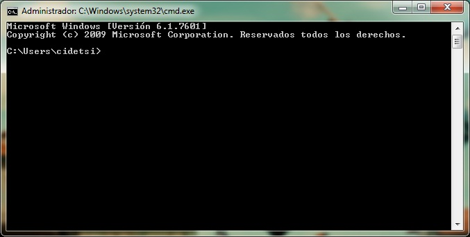
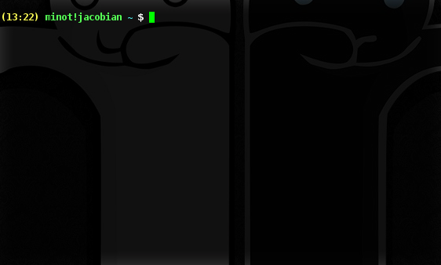
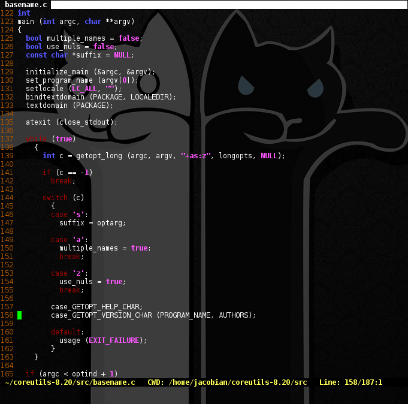

proyecto nonchalant
... una producción del grupo de PHP
- Carlos Caballero
- Vladimir Céspedes
- Franz López
- Juan Pablo Mejía
- Elvis Ramírez
- Jose Valdivia
CLI vs GUI
- Command Line (linea de comandos)
-
- Graphic User Interface (interfaz grafica de usuario)
-
Accesibilidad
¿Como obtener una terminal?
Windows
cmd
POSIX
terminal real



Inofensividad
¿Se puede practicar en una terminal inofensiva?
Problema Central
“El desconocimiento de las funciones de la linea de comandos
ocasiona un escaso interés en el uso, administración, y
automatización de tareas por medio de esta.”
Objetivo General
Reescribir el conjunto funciones básicas de un sistema
operativo, de tal forma que pueda estructurarse una linea de
comandos, para así poder facilitar el entendimiento de las
funciones que esta posee de manera eficaz.
Objetivos Especificos
- Crear una interface de linea de comandos que pueda ser
desplegada por medio de un cliente Web.
- Crear un conjunto básico de llamadas al sistema
(syscalls) de modo que estas puedan enriquecer la
variedad de instrucciones posibles de la linea de
comandos.
- Crear un conjunto básico de instrucciones que provean a
la aplicación de la funcionalidad básica y cotidiana en
los sistemas operativos.
- Diseñar e implementar una arquitectura de software que
permita extender el conjunto de funcionalidades
establecidas.
- Proveer a la aplicación construida de una licencia que
permita la instalación, distribución, y modificación de
su código fuente.
Herramientas
Uso de las librerias Zend.
Migración de todas las funciones a PHP nativo.
¿Por qué?